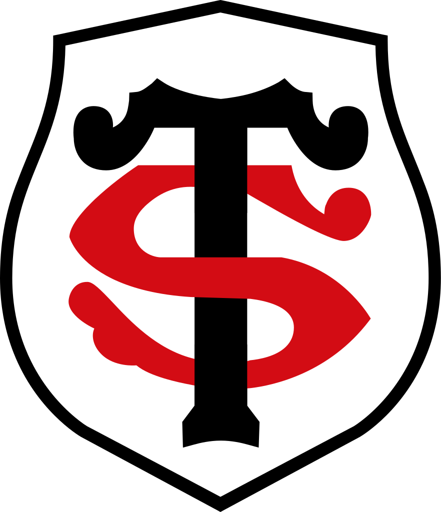
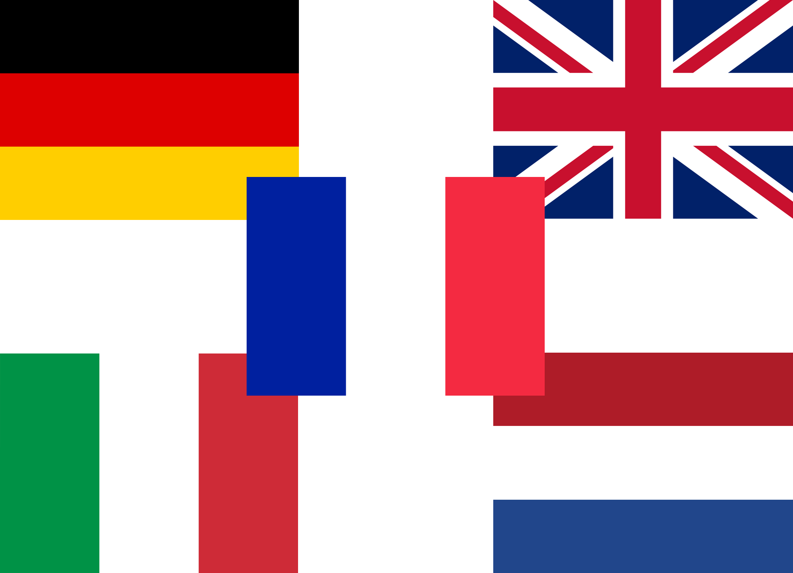
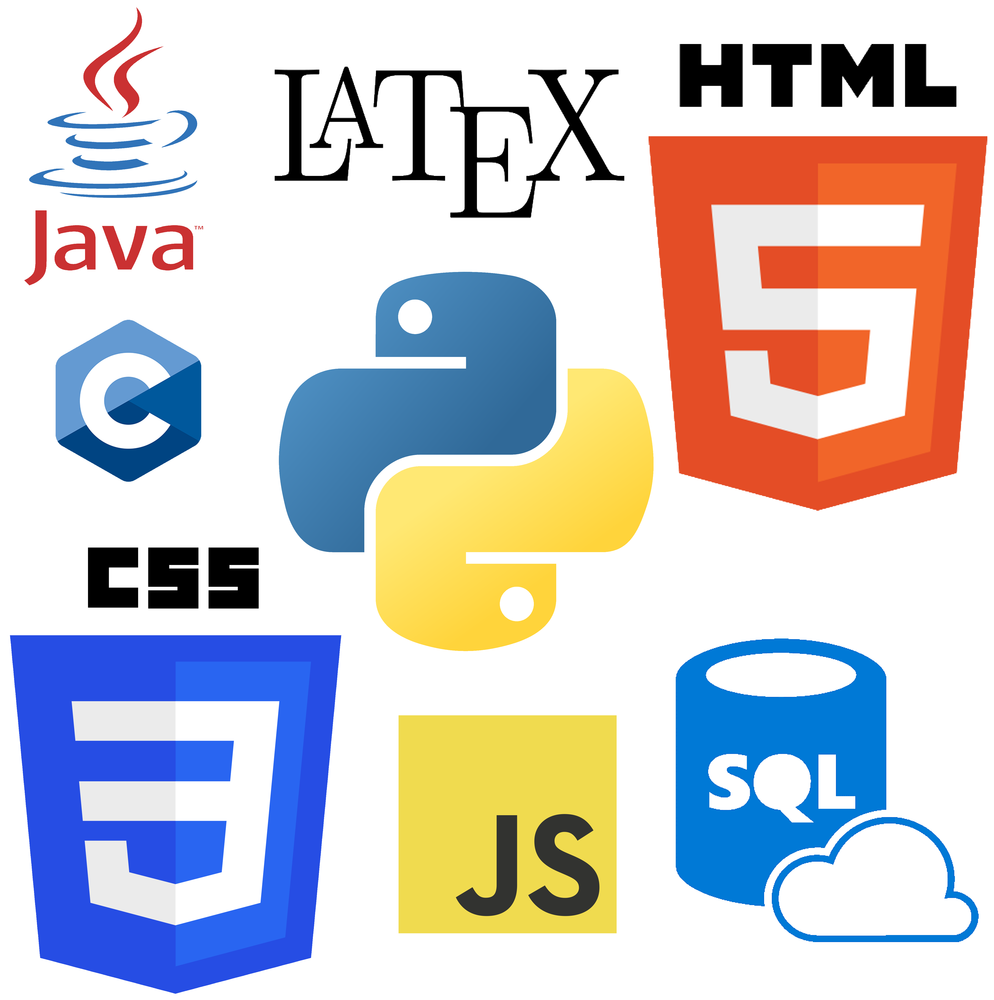
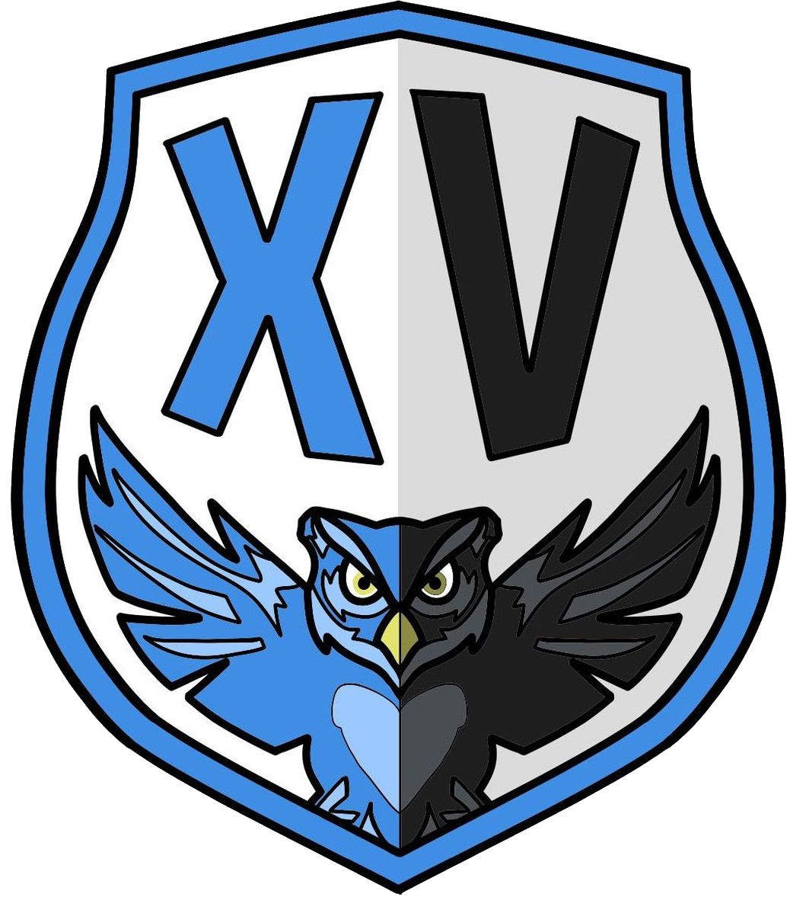

🠕

Adrien Moyaux
INGENIEUR SUPAERIEN
Adrien.MOYAUX@XXXXXXXXXX.fr
06 XX XX XX XX
Bonjour,
Je m'appelle Adrien, j'ai 20 ans et je suis originaire du département du Nord. J'ai créé ce site pour développer mes compétences en HTML, CSS et Javascript. Je suis actuellement élève ingénieur en deuxième année à l'ISAE-Supaéro à Toulouse (promo 2024). J'aime beaucoup apprendre et ce dans tous les domaines.
Je m'engage égalemment dans certains clubs et associations de l'école.
En effet, je suis responsable des événements de l'association des Arts de Supaéro.
Et faisant partie de l'équipe de rugby de l'école, j'ai la chance, grâce au partenariat entre Supaéro et le Stade Toulousain, de donner des cours particuliers à quelques lycéens volontaires de la section "jeunes" du Stade Toulousain.
Je me décrirais comme étant rigoureux, organisé, autonome, ponctuel et épistémophile.
Je m'appelle Adrien, j'ai 20 ans et je suis originaire du département du Nord. J'ai créé ce site pour développer mes compétences en HTML, CSS et Javascript. Je suis actuellement élève ingénieur en deuxième année à l'ISAE-Supaéro à Toulouse (promo 2024). J'aime beaucoup apprendre et ce dans tous les domaines.
Je m'engage égalemment dans certains clubs et associations de l'école.
En effet, je suis responsable des événements de l'association des Arts de Supaéro.
Et faisant partie de l'équipe de rugby de l'école, j'ai la chance, grâce au partenariat entre Supaéro et le Stade Toulousain, de donner des cours particuliers à quelques lycéens volontaires de la section "jeunes" du Stade Toulousain.
Je me décrirais comme étant rigoureux, organisé, autonome, ponctuel et épistémophile.
Mon parcours scolaire
Lycée:
En 2nd générale, j'ai pris Allemand LV2, Néerlandais LV3 et j'ai continué l'option classe
européenne commencée en 4ème
et qui donne la possibilté aux élèves d'avoir 2h de cours d'anglais en plus par semaine.
J'ai choisi de faire un bac scientifique en 1ère avec option SI (sciences de l'ingénieur) à la
place de la SVT.
En terminale j'ai choisi la spécialité mathématiques.
Pour terminer, en fin de terminale j'ai pu obtenir le baccalauréat avec mention Très Bien, ayant obtenu une
moyenne générale de 19,81/20.
Etudes supérieures:
Durant cette période, j'ai d'abord effectué ma scolarité au
lycée Faidherbe
 de Lille.
En effet, j'ai décidé dans un premier temps de faire une CPGE scientifique (Classe Préparatoire aux Grandes
Ecoles).
J'ai donc rejoins en 1ère année la filière MPSI (Maths Physique et sciences industrielles pour
l'ingénieur).
Grâce à un bon classement dans ma classe de MPSI, j'ai eu l'opportunité de rejoindre en 2ème
année la classe de
PSI
*
(Physique et sciences industrielles pour l'ingénieur).
Au bout de ces 2 années, j'ai passé le
concours Centrale Supéléc
et le
concours Commun Mines Ponts.
de Lille.
En effet, j'ai décidé dans un premier temps de faire une CPGE scientifique (Classe Préparatoire aux Grandes
Ecoles).
J'ai donc rejoins en 1ère année la filière MPSI (Maths Physique et sciences industrielles pour
l'ingénieur).
Grâce à un bon classement dans ma classe de MPSI, j'ai eu l'opportunité de rejoindre en 2ème
année la classe de
PSI
*
(Physique et sciences industrielles pour l'ingénieur).
Au bout de ces 2 années, j'ai passé le
concours Centrale Supéléc
et le
concours Commun Mines Ponts.
A la suite de ces concours j'ai été admis à l'ISAE-Supaéro

à Toulouse.
En 1ère année, après 6 mois de tronc commun, j'ai choisi les cours suivant pour le 2nd
semestre:
Conception des circuits numériques complexes ·
Aérodynamique des automobiles ·
Comment concevoir robuste et fiable ? ·
Histoires des structures aérospatiales et de leurs mathématiques.
En 2ème année, après 6 mois de tronc commun, je fais un semestre académique en substitution à l'Università di Pisa où Je suis les cours:
où Je suis les cours:
de Lille.
En effet, j'ai décidé dans un premier temps de faire une CPGE scientifique (Classe Préparatoire aux Grandes
Ecoles).
J'ai donc rejoins en 1ère année la filière MPSI (Maths Physique et sciences industrielles pour
l'ingénieur).
Grâce à un bon classement dans ma classe de MPSI, j'ai eu l'opportunité de rejoindre en 2ème
année la classe de
PSI
*
(Physique et sciences industrielles pour l'ingénieur).
Au bout de ces 2 années, j'ai passé le
concours Centrale Supéléc
et le
concours Commun Mines Ponts.
A la suite de ces concours j'ai été admis à l'ISAE-Supaéro
ISAE Supaéro
C'est l'une des 204 écoles d'ingénieurs françaises accréditéesà délivrer un diplôme d'ingénieur. Placé sous la tutelle du ministère des Armées, l'Isae-Supaéro est issu de la fusion entre l'Ensica et Supaéro, réalisée en 2007. Supaéro, école créée en 1909 par le colonel Roche, dans le but de former des "scientifiques, directeurs, et ingénieurs intelligents", pour l'industrie aéronautique française et européenne.
En 2ème année, après 6 mois de tronc commun, je fais un semestre académique en substitution à l'Università di Pisa
Mes expériences
Tutorat dans un lycée
Comme évoqué précédemment, grâce au partenariat entre Supaéro et le
Stade Toulousain

, j'ai eu l'occasion de
donner
des cours particuliers à quelques lycéens volontaires de la section "jeunes" du Stade durant la saison 2021
- 2022.
Vie associative à l'école
Depuis février 2022, je fait partie du bureau de l'association des Arts de l'école.
J'ai été nommé responsable des évenements de l’association.
Avec le bureau nous avons pu organiser plusieurs évenements durant le mandat, notamment des évenements
mettant en avant
les différents clubs de l'association sous format de mini-festival en plein air, ou encore un marché de Noël
sur le campus.
Projet d'innovation créative
Dans le cadre des nos études l'école nous fait faire en 1ère année un projet allant de l'état de
l'art à une innovation
concrète, en passant par le management d'une équipe (PIC):
Avec 3 camarades, nous avons décidé de travailler sur la protection des écosystèmes marin contre les outils
de
déssalement d’eau de mer. Nous avons pu entre autres créer un sous-marin autonome capable de récupérer la
saumure mais égalemment de semer des larves de coraux pour contribuer au bon développement des écosystèmes
marins.
Mes compétences
Langues
Etant français, je parle français couramment

. Depuis la classe de
6ème j'apprends l'anglais,
j'ai donc pu obtenir le niveau B2-C1 en anglais. Je pratique égalemment
l'allemand depuis la 6ème,
ce qui fait que j'ai le niveau B1-B2 en allemand. J'ai pratiqué durant mes trois
années de lycée le
néerlandais, à la fin du lycée j'avais le niveau A2-B1 en néerlandais. J'ai
commencé à apprendre l'italien
en 1ère année d'école et j'ai donc à ce jour un niveau A1-A2 en
italien.
Informatique
Depuis que je suis arrivé en CPGE, j'ai suivi des enseignements de
Python

et
SQL.
En 2ème année de prépa j'ai commencé à apprendre le langage
Latex
, pour pouvoir écricre de manière plus propre et plus professionnelle des comptes rendus
scientifiques.
En arrivant en école d'ingénieur, j'ai pu suivre des cours pour apprendre le
C.
Enfin, entre la 1ère et la 2ème année d'école, j'ai commencé à apprendre le
HTML,
et forcément le
CSS
et le
Javascript.
En 2ème année d'école j'ai pu avoir des cours de
et le
Java.
Secourisme
J'ai eu la chance de passer et d'obtenir le
PSC1
, formation de premiers secours.
Mes passions
Sport

Le XV des peintres
C'est le nom de l'équipe de rugby de l'école. J'ai rejoins l'équipe durant la saison 2021 - 2022 et je joue au poste de 3 ème ligne aile.
Durant ma vie j'ai toujours fait beaucoup de sport. Dans mes années collège - lycée, je pratiquais le tennis
ansi que la natation.
En arrivant sur Toulouse en école d'ingénieur j'ai commencé le rugby ainsi que la
musculation.
Programmation
J'ai découvert la programmation durant mes études supérieures et j'aime beaucoup cet univers.
Art et culture
J'aime le cinéma, la musique et la lecture.